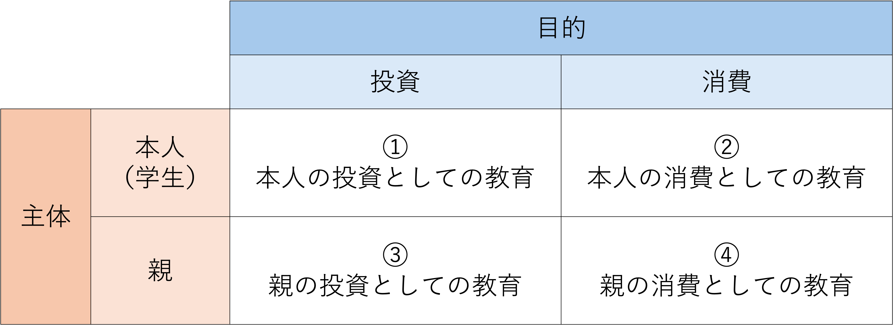
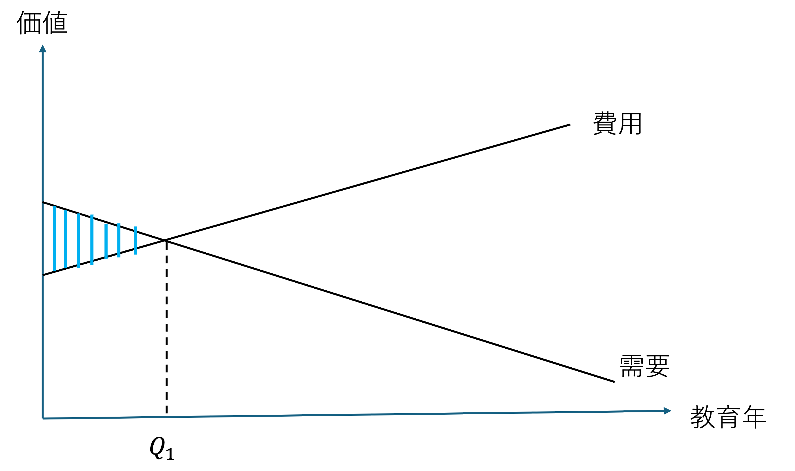
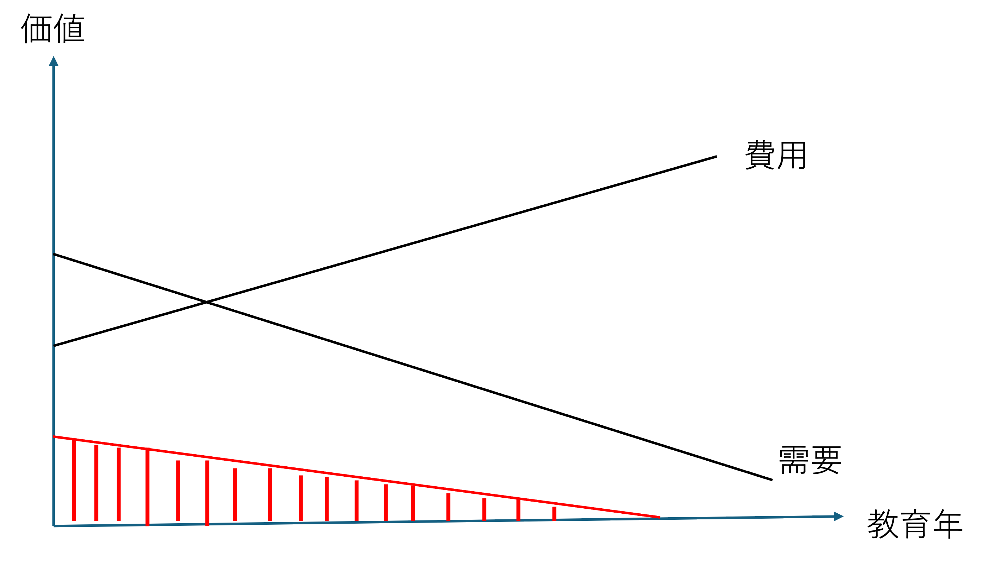
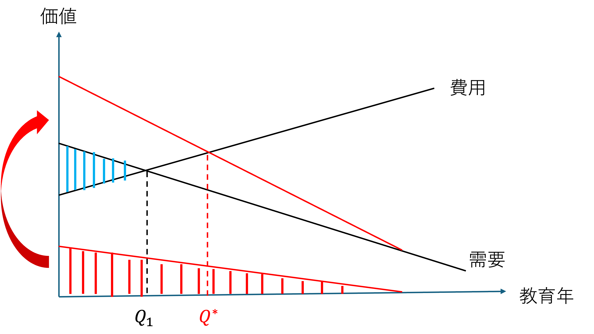

5 投資・消費としての教育
5.1 学習目標
- これまで学習してきた投資としての教育に加え、消費としての教育に関する基本的な考え方を理解する。
- 教育費の負担構造とその負担理由を理解する。
- 家庭における教育支出を理解する。
- 教育における政府の役割を理解する。
5.2 教育費の負担
教育費の負担構造を考えてみましょう。それぞれがなぜ教育費を負担するのか教育経済学の枠組みで考えます。そのうえで、負担者と負担の理由、妥当性について考えていきます。
教育費の負担者
- 本人（学生）
- 保護者（親）
- 政府（国・県・市区町村など）
- 企業・産業団体
負担構造
図 5.1 で示され教育費の負担構造について、それぞれのアルファベットが示す費用の流れについて、なぜその費用が負担されるのか（支出されるのか）、負担理由を考えてみましょう。
個人&グループワーク（10分） - 図 5.1 にみられる教育費の負担構造について、その負担理由を考える。 - お互いの答えを共有し違いを議論する。
教育費の負担理由
| 負担者 | 理由 |
|---|---|
| A・B 本人・保護者 → 教育機関 直接的な授業料の支払い |
投資としての教育支出 - 人的資本投資 - シグナリング投資 消費としての教育 |
| C 企業 → 本人・保護者 企業による授業料の補填 |
人的資本投資 インセンティブプログラム 福利厚生 |
| D 企業 → 教育機関 企業による教育機関の支援 |
産学協同研究 寄付（社会貢献・税控除） 広報 ビジネス戦略 |
| E 政府 → 本人・保護者 奨学金などの補助 |
公平性の確保 |
| F 政府 → 教育機関 政府による教育機関の補助 |
公平性の確保 学力向上・科学技術の発展 雇用拡大・生産力向上 外部効果 |
5.3 家庭による教育支出
家庭（本人・保護者）による教育支出は、投資と消費としての2つの側面があります。
投資としての側面
これまで学んで来たように、教育は将来の収益を期待する投資活動と考えます。
- 人的資本投資
教育を受けることで生産性が向上し、高い賃金を得る。 - シグナリング投資
教育を受けることで自分の能力を示し（生産性が高いと示し）、高い賃金を得る。
消費財としての側面
教育そのものを楽しむ、あるいは効用（満足度）を得る行為として考えます。
教育需要の主体と目的の整理

① 本人の投資としての教育
- 人的資本論、シグナリング理論が想定するタイプの教育
- 会社員がキャリアップを目指し資格を得るために各種の専門学校に通う
- 大学生が保護者から金銭的な支援を得ず、奨学金を借りて大学に通う
② 本人の消費としての教育
- ミカンやリンゴを食べたり、演奏会を聞きに行ったりする行為と同様に経済学的には普通の消費行動
- 定年後の趣味、サラリーマンの趣味の習い事
- 外部経済効果はほとんどない
- 政府として大きな介入は考えられない（あるとすれば文化的な背景から）
- 本人の知的好奇心の充足
教育にはこのような消費としての側面があるので、単純に教育の内部収益率と市場の利子率の大小により需要を判断出来ない。
③ 親による投資としての教育
- 子どもに良い教育を授けて、将来豊かな生活を送れるようにする
- 親が見返りを期待しているか？
- 親は自分の消費と将来子供から得られる見返りを考慮して子供の教育支出を決定する
- 日本の場合、ほとんどの親は見返りを求めていない
- 金銭的な見返りがないものを経済学的には投資とは言いにく。むしろ「所得移転」として捉えた方がよい
- 所得移転と考えた場合、教育以外の手段も考えられ、なぜ教育かという議論は起こる
- さらに、所得移転とすれば政府は教育に課税をする必要がある？
④ 親の消費としての教育
- 子どもに教育を授けて、親が効用を得る
- 塾に通わせることでの親の満足
- ブランド校、有名校に通わせることでの親の自己満足
- 誇示的消費としての側面
- 自分の財力やステータスを他者に示す目的で行われる消費行動
具体的には、高級品やブランド品を購入する、豪華な食事や旅行をするなど、他者が羨むような消費行動を指す
- もはや政府が支援する根拠は大きく薄れる
- 親の満足：子どもを塾やブランド校に通わせることによる自己満足、あるいはステータスの誇示（誇示的消費）
家庭による教育支出まとめ
教育需要はこれらが重層構造になっており、ライフステージによって変化するのが自然です。
| 負担者 | 理由 |
|---|---|
| 本人の投資 | 国家資格取得のための専門学校、奨学金での進学など。人的資本論の想定。 |
| 本人の消費 | 趣味の習い事など。外部性は乏しく、政府介入の根拠は弱い。 |
| 親の投資 | 将来の豊かな生活のため。金銭的見返りがない場合は「所得移転」に近い。 |
| 親の消費 | 親の効用（満足感）のため。ブランド校通学など。政府が支援する根拠は薄れる。 |
これまでの議論を聞いて、自分の場合には、パターン①から④の中でどの要素が最も強いと考えますか、そしてのその理由は何ですか？
個人&グループワーク（10分） - 自分が拓殖大学で学んでいる理由は、どの要素が強いですか？ - お互いの答えを共有し違いを議論する。
あなたが大学で学ぶ理由は？
- 自分への投資（日本人）
- 自分の消費（日本人）
- 親の投資（日本人）
- 親の消費（日本人）
- 自分への投資（留学生）
- 自分の消費（留学生）
- 親の投資（留学生）
- 親の消費（留学生）
Slidoに投票してください。
5.4 企業による教育支出
企業 → 本人・保護者
一般的人的資本
企業が投資することはない
⇒ 転職されれば投資費用を回収できないから企業特殊的人的資本 企業が全額負担し、その投資を回収するために賃金を上げない
⇒ 転職されたら回収できない
（労働者は同じ給料のため転職しても影響はない）
⇒ 投資費用とその収益を労使間で分配する
企業 → 教育機関
- 産学協同研究
- 寄付（社会貢献・税控除）
- 広報
- ビジネス戦略
5.5 政府による教育支出
国・県・市区町村などによる教育支出の妥当性
教育は外部性を持つため、個人に教育需要の決定を委ねると社会全体にとって望ましい教育水準が達成できない可能性が高い。
- 教育が個人にのみ便益があるのであれば、単純に個人の需要と費用の関係で必要な教育年数は、\(Q_1\) 決まります。

- しかしながら、教育にはさまざまな外部効果が考えられます。それらをまとめて以下の赤い部分で示します。

- そして、教育の外部効果を個人の需要に上乗せすると、以下のように社会全体で望ましい教育年数は、\(Q^*\) となります。

- つまり、教育には外部効果があるため、\(Q^* - Q_1\) の教育年数を政府が支援することは妥当だと考えられます。
外部性（externalities）、外部経済効果（external economy）
個人が教育需要の大きさを決める場合、自分にとって必要な効用だけを考慮するため、社会全体にとって最適な水準よりも過少になる可能性がある。このため、政府が費用を肩代わりして供給を支える。
教育の外部性
ウォルター・マクマホン（Mcmahon, 1982）は、以下の7つを教育の外部性としてあげました。
| 番号 | 外部性の内容 |
|---|---|
| 1 | 効果的な民主主義と民主的組織の形成に貢献する |
| 2 | 市場と技術変化への効果的な適応を可能とする |
| 3 | 犯罪率を下げ、刑罰制度の費用を減らす |
| 4 | 福祉・失業保険・公共医療などの社会的費用を下げる |
| 5 | 資本市場の欠陥・不完全性を補完する |
| 6 | 地域および地方公共団体の公益事業を活性化する |
| 7 | 生産における補完性・相互性を有する |
これらのうち（3）（4）は定量的な計測が比較的容易であり、OECD各国において毎年報告されています。一方、（1）（2）（5）は「期待外部性」と呼ばれ、定量的な検証が難しいとされています。
外部性の実証
マクマホンが指摘した教育の外部効果は、次々と実証されてきました。なかでも教育が失業保険給付や社会保険料にもたらす影響は定量化が可能なため、OECD各国においてほぼ毎年分析がなされています。以下では、代表的な5つの実証分野を紹介します。
犯罪件数（犯罪率）・治安への効果
教育量と犯罪件数の関係を探る実証研究は少なくありません。概ね、教育は犯罪を抑制する効果があり、それによって社会費用が削減されるという結果が得られています。
- 先進国・途上国の両方を対象に研究が展開されており、経済の発展度にかかわらず治安や警備に要する費用は深刻な問題であることがわかる（Lochner, 2004; Machin, Marie & Vujić, 2011; Lochner & Moretti, 2004）。
- 日本においても実証的な研究が行われており、島（研究代表・編著）（2018）は大学を卒業することによって犯罪に伴う費用を一人当たり1,538円抑制できると算出している。
成人や児童・幼児死亡率への効果
教育と成人および幼児の死亡率との関係をめぐる研究は、幼児死亡率の高い途上国を対象とする場合が多く、とくに母親の学歴や就学年数に注目が集まっています。
- King & Hill（1997）は世界的なサーベイをもとに、母親の教育が出生率・幼児死亡率・夫の死亡率を下げるなど、家族全員の寿命を延ばすことを明示した。
- Gakidou et al.（2010）は1970年から2009年にわたる175カ国のデータをもとに、女性の教育が幼児死亡率に与える影響をさらに究明している。
- 日本では、Fujino et al.（2005）が学歴と高齢者の死亡原因との関係を研究している。
健康管理への効果
就学経験が豊富な者ほどリスクを避ける傾向があり、食事・衛生管理、病気や事故の予防について知識を持ち、適切に対処できる傾向にあります。
- 学歴が高い者ほど喫煙や飲酒の習慣が少ないことが指摘されている（Sander, 1998）。
- 健康管理については母親あるいは女性の教育経験が強い影響を持つことがわかっており、家族の食事や健康を管理する者の教育レベルが高いほど家族一人ひとりが病気になりにくく、公的健康保険の負担も減少する。
- 健康状態が良く精神的に安定すると犯罪件数も下がるため、健康への外部効果は治安にも波及する。
子育て環境と子育て効果への影響
親の学歴と子育て環境、さらに子どもの学業・品行等との関係については、多くの研究が積み重ねられています。
- 親の学歴が高いほど良い環境で子どもを育てられるとされ、多くの研究が子どもの学業成績を左右する最大の要因として母親の学歴を挙げている（Davis-Kean, 2005）。
- 学習を促す環境をつくり、勉強を教えるなどの行為が母親によるところが大きい状況では、母親の学歴が子どもに与える影響は極めて大きい。
- 近隣効果：付近の住民の教育レベルが高いと、安全で安定したコミュニティが形成され、そこに住む子どもたちの学業にもプラスの影響を及ぼすとされる。
消費の質と量への影響
教育は消費の質と量にも肯定的な影響を及ぼします。
- 学歴が高い者ほど消費を抑えつつ貯蓄などをして将来に備えようとする傾向がある。
- クーポン使用と教育経験との関係について、学歴が高い者ほどクーポンを有効に活用する傾向が1970年代アメリカの研究で明らかになった。
- このような消費行動によって個人の生活がより安定するのみならず、無駄なゴミ削減や食品購入における健康維持にも影響する。
教育への公的関与の問題
ここまで教育の経済的効果に焦点を当て、政府が教育に介入する理由とその妥当性について述べてきました。しかし、政府の教育への関与の「在り方」については、様々な論争があります。以下では、政府主導型教育を推し進めてきた4つの理由を覆そうとした議論を概観します。
教育は経済発展をもたらすのか
教育量が増えることが国家経済の発展をもたらすのかという疑問は、第2章の人的資本理論の説明力を問う議論としても取り上げました。教育と経済成長の間に顕著な正の相関があることは、必ずしも因果関係の証左にはなりません。
- 教育量が増えたから経済発展がもたらされたのか、経済が発展したために教育を受ける機会が増えたのか、いわゆる「鶏と卵」の関係にある。
- 教育が消費として捉えられる場合、経済的に豊かになると教育への支出も増加するため、教育量は増える。この観点に立つと、政府が経済発展のために教育に先行投資することの妥当性は減ずる。
教育の外部性に政府の関与は必要か
教育に外部効果があることを認めたとしても、それを管理運営するのが政府でなければならないということは別問題です。
- 例えば個人や企業が教育費用を支払い、学校教育を政府以外の組織によって運営したとしても、教育という営みが継続されるのであれば、自ずと外部効果は生まれる。
- つまり、政府が資金を負担する限りは教育の外部性は保証される、という考え方が成り立つ。
- ただし、民間の運営によって教育がもたらす社会的公共性（民主主義の醸成や公益事業の活性化など）が維持できるのかという疑問も根強い。
学校教育は国民共通の価値形成の場か
学校は共通の価値形成を行う最も公的で影響力の強い現場です。参政、納税、倫理、善悪など社会参加に必要な決まり事を政府主導で作成された指導要領に基づき学びます。しかし、この観点には批判もあります。
- 国家の権力と統率力が強ければ強いほど、パターナリズム（父権主義・温情主義） を通して政治的に偏った価値観が国民に浸透し得る。
- パターナリズム：国家あるいは個人が他者の意思に反するとしても、介入・干渉あるいは支援等をすること。
- パターナリズム：国家あるいは個人が他者の意思に反するとしても、介入・干渉あるいは支援等をすること。
- 国家主導で統一された価値観が個人の価値観と相いれず、多様性への敬意や寛容性を失う過程にもなり得る。
- 教育が個人の能力・努力によって社会的地位が定まる「メリトクラシー（能力主義）」の評価指標として機能すると、新たな格差バイアスを生み出す可能性もある。
政府主導による教育機会の向上は経済的・社会的公平性をもたらしたか
第二次世界大戦後、教育機会の均等化を通じて経済格差を是正し、公平な社会を築くことが目指されました。確かに義務教育は世界的に拡充されましたが、それに伴って当初想定された富の分配が促されたかというと、答えは否です。
- 教育を積むほど収入は伸びるものの、教育年数の少ない者との経済格差は広がる一方であり、教育はむしろ格差を拡大させる媒体となっている（橋本, 2020）。
- 過去半世紀、教育の機会を充足させることと経済的・社会的な公平を達成することは必ずしも同一線上にない。
- アファーマティブ・アクション（積極的差別撤廃措置）：弱者集団の不利な現状を歴史的経緯や社会環境を鑑みたうえで是正するための改善措置。
- 1978年パッキー判決（アメリカ連邦最高裁）：少数派枠を数で定めるクォータは違憲であるとされた。
- 機会均等のための施策と公平性の達成との間には、ずれや歪みが様々な場面で論争の種となっている。
- 1978年パッキー判決（アメリカ連邦最高裁）：少数派枠を数で定めるクォータは違憲であるとされた。
公共財の供給と運営の分離
教育費の公的支出はよいとしても、管理運営は民間や保護者・地域コミュニティで構成される組織に委ねられないか、という議論が近年中心となっています。
- 政府が教育の資金源であることは正しいが、学校教育の「運営」は政府によるものである必要はなく、民間への委託がむしろ効率的ではないかという見解がある。
- 一方で、民間の運営に委ねることによって、教育がもたらす社会的公共性を維持できるのかという疑問も根強い。
- 課題は誰が教育費を負担するかではなく、それぞれがどれだけ教育費を負担するかという「程度」の問題ということになる。
- 数年来、世界的に教育の資金と運営は、ともに官から民へとシフトしている状況にあり、教育資金と管理運営をめぐる官と民それぞれの責任と資金拠出の「程度」を見極めていくことが今問われている。
政府による教育支出について
先日、財務省が2040年までに私立大学を少なくとも250校（全体の約4割）削減する案を提言し、大きな波紋を呼んでいます。
少子化による定員割れの深刻化や、教育水準の低下に対する懸念が背景にあります。
文部科学省は「機械的な判断は避けるべき」と反発しています。
この提言の主なポイントは以下の通りです。
提言の背景と目的
- 定員割れの深刻化：18歳人口の減少により、全国の私立大学の過半数（約53%）が定員割れに陥っています。
- 教育の質の確保：財務省は、定員を確保するために学生の学力水準が低下し、中学校レベルの基礎的な学習をやり直す授業を行っている大学があることを問題視しています。
- 適正規模への移行：2024年時点で624校ある私立大学を、2040年までに217〜372校規模（約14万人減）へ適正化する必要があるとしています。
議論の対立点
財務省の主張：国税が投入されている現状において、大卒としての一定の質を維持するためにも、抜本的な統廃合や定員削減が不可欠であるとしています。
文科省・関係者の反発：大学は地域経済や地方の若者の進学先を支えるインフラであるため、学校数のみで機械的に削減を決めるのではなく、地域や分野のバランスを考慮すべきだという意見が強くあります。
ABEMA Prime 13:00-17:51, 19:50-22:24
- 田島先生の主張：定員割れしている大学は地方に多い
- 地元を出られない人が学べなくなる
- 土地の文化・産業研究も衰退してしまう
- 地域に根付いた人材が減る
- 地元を出られない人が学べなくなる
- Wakkate.TV 高田ふーみん
- 税金に限りがあるので、高学歴（研究成果を出している大学）に投資して欲しい
- 東大・京大も研究費が足りていない
- 定員割れしている大学に税金（補助金）を注ぎ込むのは損失である
- 中学・高校で学ぶような内容を、補助金が入っている大学で再度学び直すのはおかしい（税金の無駄遣い）
- 定員割れしている大学に補助金を出すぐらいなら、小・中学校の教員の質を上げるべき（岩田温氏）
- 税金に限りがあるので、高学歴（研究成果を出している大学）に投資して欲しい
- 土居先生：日本の大学は卒業しやすい。アメリカの大学は難しい。大学が単位認定を厳しくし、基準に満たない学生には単位を出さなければ、大学の質は保たれる。
個人&グループワーク（10分）
- あなたはこれあの意見について、どのように考えますか？
- どちらの意見に賛成ですか？ またその理由は何ですか？
- お互いの答えを共有し違いを議論する。
5.6 その他の性質
公共財としての教育
公共財の定義：
1. 非競合性：誰かが消費しても他の人の消費を減らさない（例：公園、道路）
2. 排除不可能性：誰かの利用を拒否できない（例：国防、警察）
教育の性質：
非競合性は概ね満たされるが、排除不可能性は完全には満たされない。
- 準公共財（quasi public goods）
純粋な私的財とは異なるため、価格のみでその価値を評価することは難しい。
価値財としての教育
価値財とは、政府が消費者主権に介入し、消費者の行動を矯正することで社会的に利益があると考える財やサービスのこと。
消費者の情報不足や誤解により自ら最適な選択ができない場合、政府が介入して提供する。
日本国憲法第26条：教育を受ける権利の保障と、保護者の教育を受けさせる義務。
これらを踏まえ、教育は価値財であると考えられる。
教育は公平性追求の手段か？
教育機会の欠如は格差に直結するため、政府が提供すべきという考えがある。
- 機会の平等と結果の平等
しかし、同じ教育を受けても個人の能力差により教育効果が異なり、かえって所得格差が広がる可能性もある。
- 個人の潜在能力を事前に把握することは困難なため、公平性のみで教育供給を完全に正当化することは難しい。
政府関与の多面性
経済学的な理屈（外部性や公共財）だけでは、政府が直接供給すべきという結論には直結しない。
民間（私立学校など）による供給という選択肢もある。
ただし、教育には以下の側面があることを忘れてはならない。
- 政治的側面（統治）
- 文化的な側面（文化の伝承）
- 市民社会の維持